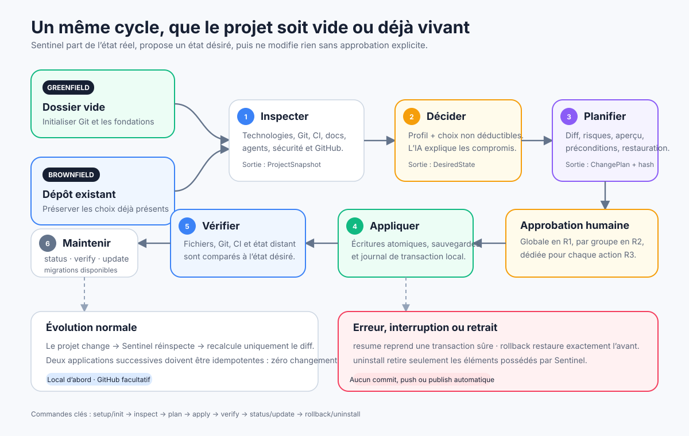
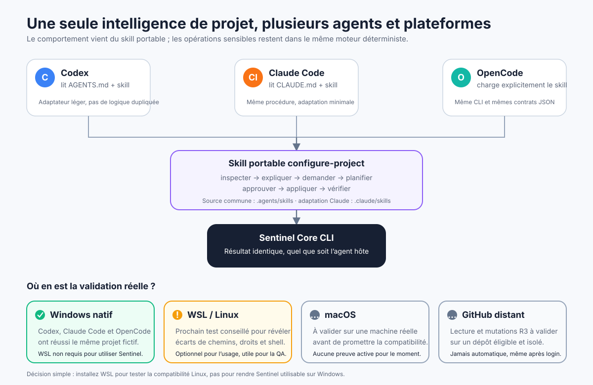

Sentinel et les trois agents ont déjà été exercés sous Windows natif.
{kind=link}
1. Architecture générale
L’agent comprend et explique ; Sentinel Core exécute les opérations déterministes sur le projet local et, seulement si demandé, sur GitHub.
Ouvrir le SVG seul →{kind=link}
2. Parcours humain
Une installation sur l’ordinateur, puis une commande simple dans chaque projet. Les approbations restent visibles.
Ouvrir le SVG seul →{kind=link}
3. Parcours de l’IA
Le skill orchestre le dialogue, mais le dépôt inspecté reste une source non fiable et ne peut pas donner d’ordres à l’agent.
Ouvrir le SVG seul →{kind=link}

4. Cycle de vie du projet
Dossier vide et dépôt existant convergent vers le même pipeline : état réel, état désiré, plan immuable, transaction, vérification et maintenance.
Ouvrir le SVG seul →
5. Sécurité et transactions
Les risques R0 à R3 déterminent l’approbation. Avant toute écriture, Sentinel vérifie le plan et prépare la restauration.
Ouvrir le SVG seul →{kind=link}

6. Agents, plateformes et WSL
Les trois agents partagent la même intelligence de configuration. Windows est prouvé ; WSL/Linux, macOS et le distant constituent les validations suivantes.
Ouvrir le SVG seul →